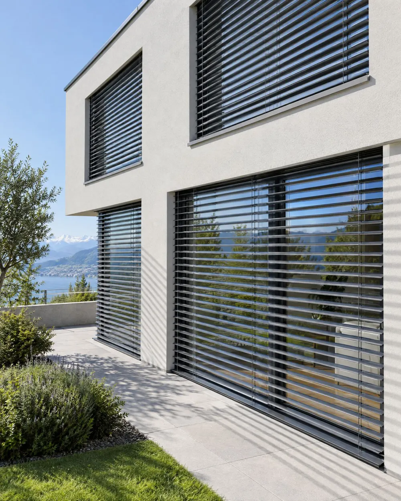

Stores à lamelles
Les lames orientables arrêtent le soleil avant la vitre : la chaleur reste dehors et la lumière entre comme vous la réglez.
- Prix indicatif
- dès CHF 950.– par fenêtre
- Délai
- 4 à 6 semaines
- Marques
- Griesser, Schenker
- Lames de 80 ou 90 mm, bord roulé ou plat
- Moteur Somfy io, commande murale ou application
- Capteurs soleil et vent pour remonter seuls en cas de bise
- Couleurs RAL au choix, assorties aux fenêtres